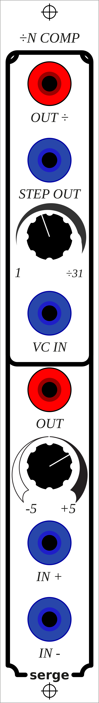

Divide by N Comparator
NCOM · ÷N COMP
A comparator plus a voltage-controlled divider (1 to 31) with a staircase output.
- Design
- Serge Tcherepnin
- Function
- Logic / divider
- Panel widths
- 1"
- Build options
- 1
Panels in this repo


How it works
The comparator turns any waveform into pulses, compared against a level set by the knob. The divider outputs one pulse for every N pulses it receives, N set from 1 to 31 by knob and VC input.
STEP OUT gives a staircase with N steps; into a VCO it produces whole-tone runs. On audio the divider makes sub-octaves and sub-harmonics; on clocks it counts beats for rhythms and event triggers.
Controls and jacks
| Name | Type | What it does |
|---|---|---|
| IN +, IN - | inputs | Comparator inputs. |
| Level knob | knob | Comparator threshold. |
| OUT | output | Comparator output. |
| N knob, VC IN | knob / input | Division 1 to 31. |
| OUT ÷ | output | Divided pulses. |
| STEP OUT | output | Staircase. |
Build options
Low-Gain LGE205 Divide by N Comparator (NCOM)
- Offered as
- Assembled module or DIY PCBs
- Format
- 4U Serge, Loudest Warning-style mounting
- Schematic
- availableLow-Gain schematics (Google Drive, linked below)
- BOM
- availableLow-Gain BOMs (Google Drive, linked below)
- Documents
- LGE205 v1.3 BOM
LGE205 v1.3 schematic
LGE205C v1.4 BOM
LGE205C v1.4 schematic
Low-Gain's board has a VC input for the comparator as well as for the divider; the Divide by N Comparator panel in this repo has no comparator VC jack.
Low-Gain boards set their own jack positions; check them against the panel you use.
Ken Stone's Serge-derived designs may be built for personal use only; Serge Tcherepnin keeps all rights to his circuits. Schematics, parts lists and PCBs belong to their designers and sellers, so these pages link to them rather than copying them.
Bill of materials
Spreadsheet: divide-n-comparator.csv (CSV; opens in Excel, Numbers or Google Sheets). The Mouser columns are there to fill in with order links.
Low-Gain LGE205 Divide by N Comparator (NCOM) (2 lines)
| Section | Type | Value / part | Qty | Notes |
|---|---|---|---|---|
| Board | See the maker's BOM | LGE205 v1.3 BOM - https://drive.google.com/file/d/1r8-d1ROGY2dwO0VQFodg0DMpQySmKIQ5/view | ||
| Board | See the maker's BOM | LGE205C v1.4 BOM - https://drive.google.com/file/d/1cF_Lauu-0JOIrotw_tD3iaPQ8fo2wC6V/view |
Panel hardware
Front-panel parts for each panel in this repo, counted from the panel files. Board parts (resistors, ICs, trimmers) are in each build option's own BOM.